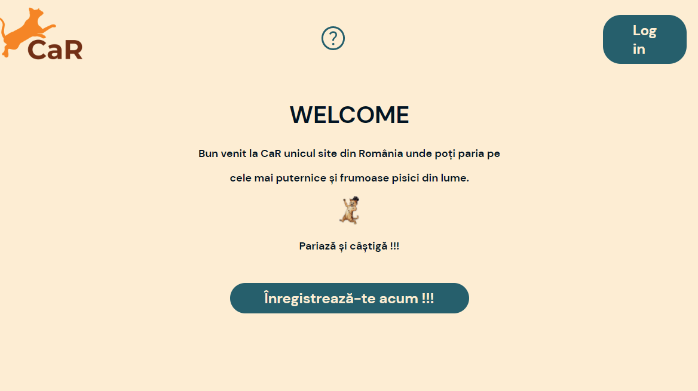
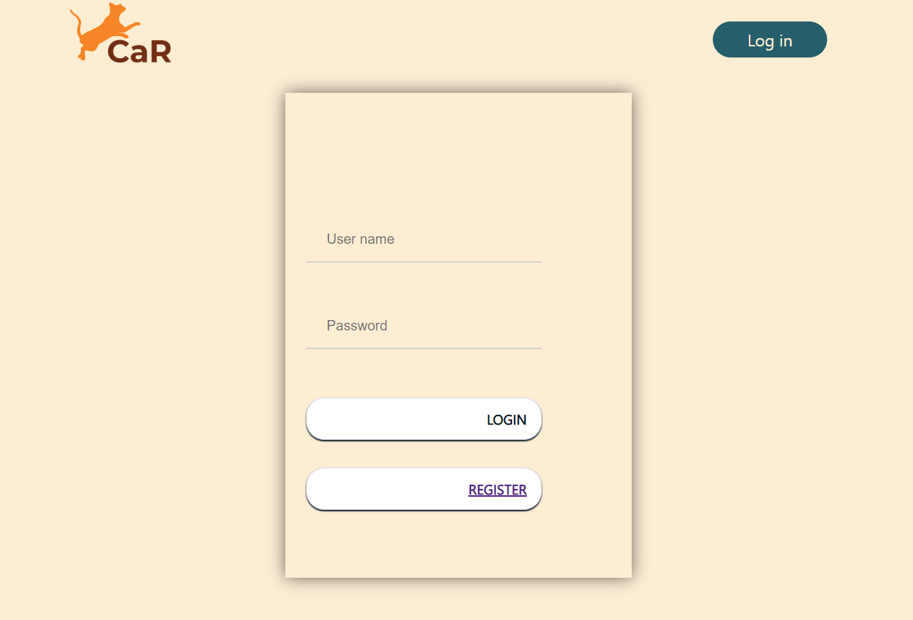
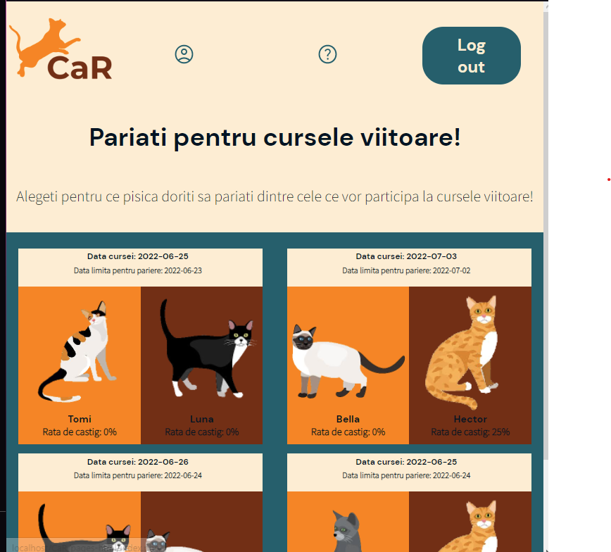
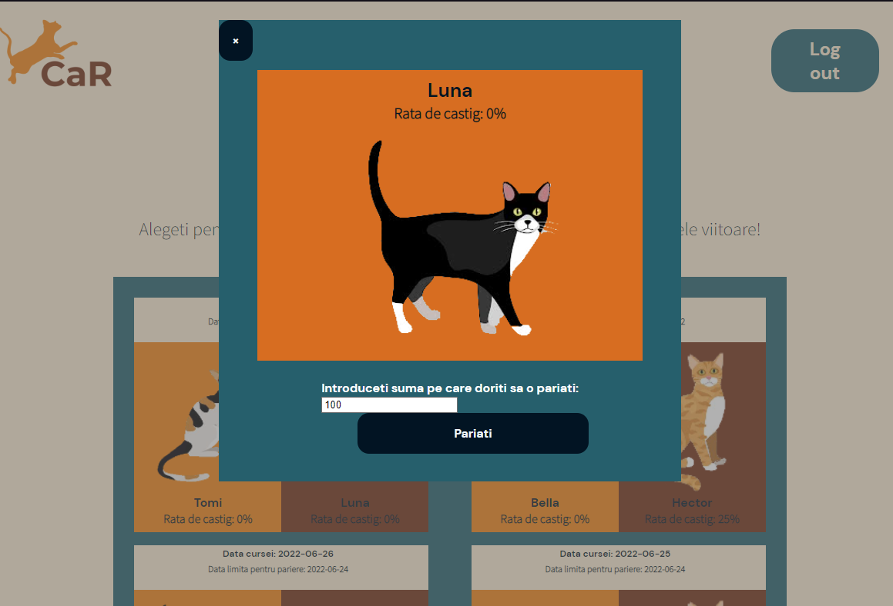
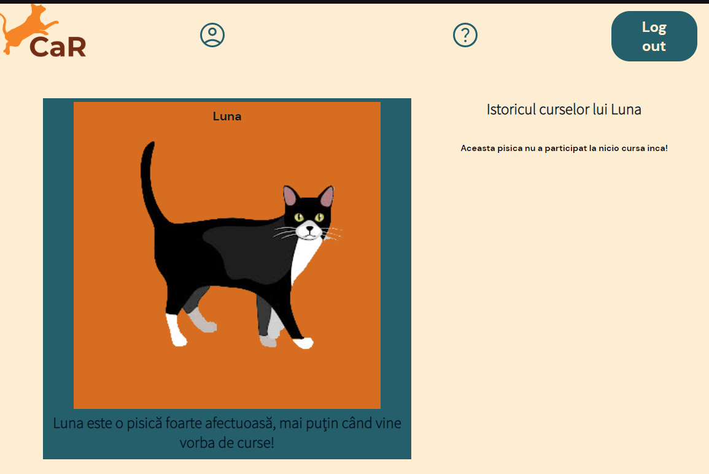
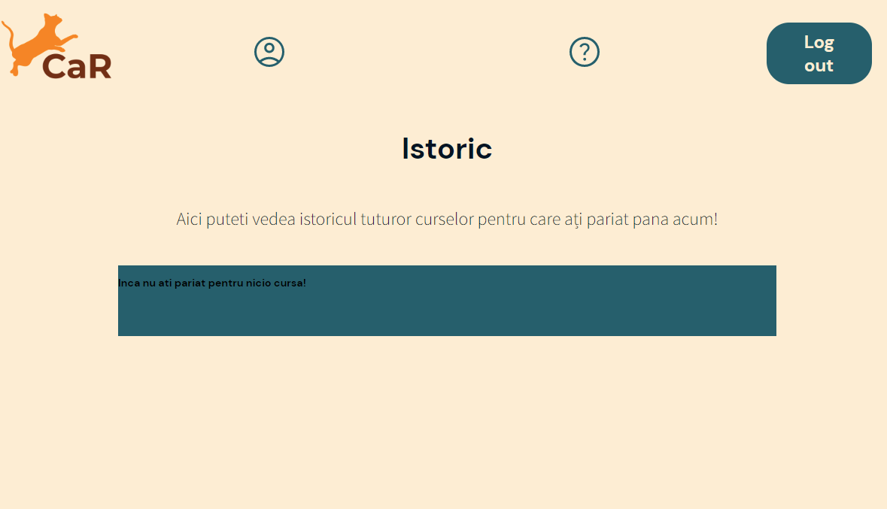
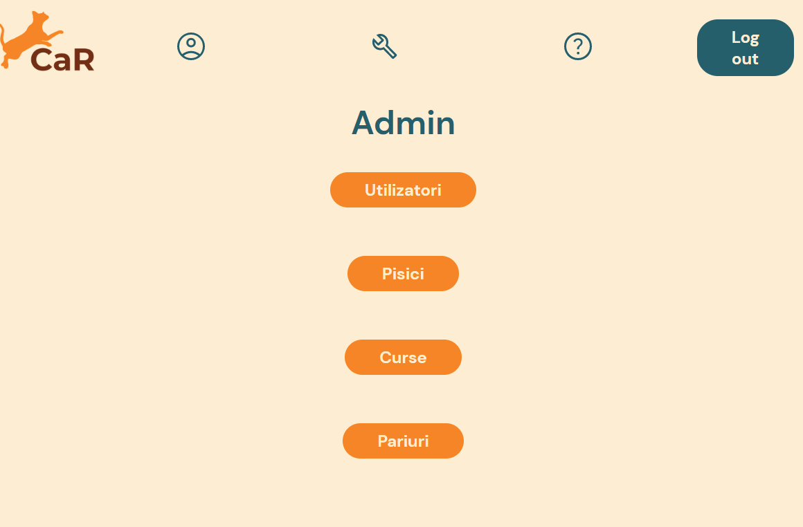
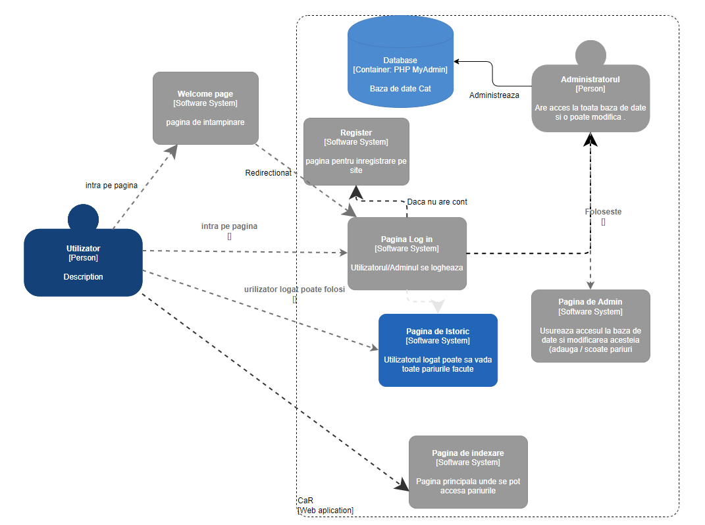

Cuprins
1. Abstract- 3.1 Perspectiva produsului
- 3.2 Funcționalități
- 3.3 Utilizatori
- 3.4 Mediul de operare
- 3.5 Tehnologii folosite
- 3.6 Schema aplicatiei Web
- 3.7 Notă
Dezvoltatori
- Pagina administrativa
- Pagina de realizare a unui pariu (back & front)
- Pagina de profil a pisicii (back & front)
- Pagina de istoric al pariurilor (back & front)
- Modulul administrativ: listare, editare, stergere pentru pisici, curse, listare pariuri (back & front)
- Pagina Login/Register (back and front)
- Welcome (back and front)
- Logout (back)
- Pagina de platit
Mădălina Bitiușcă
Alexandra Ioan
Loredana Manea
1. Abstract
Proiectul CaR este o aplicatie Web ce ofera utilizatorilor autentificati posibilitatea realizarii de pariuri referitoare la cursele de feline.
2. Introducere
2.1 Scop
Acest document este menit să familiarizeze utilizatorul cu interfața aplicației.
2.2 Cui îi este adresat documentul
Acest document este destinat dezvoltatorilor și utilizatorilor ce doresc să cunoască mai amănunțit modul de dezvoltare și funcționare al aplicației.
2.3 Scopul aplicației
Scopul acestei aplicații este de a crea utilizatorilor un mediu propice pentru a face pariuri pentru cursele de pisici
2.4 Referințe
IEEE Template.3. Descrierea produsului
3.1 Perspectiva produsului
Aplicația este un proiect realizat de 3 studenți ai Facultății de Informatică din Iași pentru materia TEHNOLOGII WEB.
Proiectul este realizat pentru nota la examenul final al acestei materii.
3.2 Funcționalități
- Utilizatorul deschide aplicatia 
- Utilizatorul se autentifică sau își face cont 
- Utilizatorul intră pe pagina principală și vede pentru ce cursă și pentru ce pisică vrea să parieze 
- În continuare, i se va deschide un modal cu pisica aleasă și un formular unde poate completa suma pe care acesta vrea să o parieze.
- Utilizatorul completează cu suma și este redirecționat către pagina de plată
- Dacă utilizatorul dorește să afle mai multe detalii despre pisica aleasă, acesta poate apăsa pe poza ei și va fi redirecționat către o pagină dedicată acesteia 
- În pagina fiecărei pisici utilizatorul va găsi o scurtă descriere a acesteia și istoricul curselor la care a participat 
- Mai departe, utilizatorul poate apăsa pe butonul dedicat pentru a vedea istoricul tuturor curselor 
- Modulul administrativ: 
- Pagina de plată
3.3 Utilizatori
Principalii utilizatori ai aplicației vor fi persoanele pasionate de feline, dar și cei ce au o atracție pentru lumea pariurilor.
3.4 Mediul de operare
Aplicația rulează pe orice dispozitiv ce suportă un browser care poate rula HTML5 și CSS3.
3.5 Tehnologii folosite
3.6 Schema aplicatiei Web
3.7 Notă
Site-ul nostru ține să avertizeze utilizatorii că pariurile pot provoca dependență și probleme financiare.
4. Altele
Aplicația nu salvează informații despre utilizator, cum ar fi: numele, contul bancar, locația, adresa, CNP și alte date personale.
4.1 Github
Pentru gestionarea codului sursă s-a folosit platforma Github, unde s-a lucrat pe un repository comun.
Dreptul de merge a fost permis doar unei persoane, fiind nevoie de un review al codului înainte de integrarea acestuia cu restul sursei.